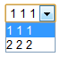

BW5005: Webkit 浏览器会压缩 OPTION 元素中的全角空格
作者：王军
标准参考
无
问题描述
Webkit 浏览器会压缩 OPTION 元素中的全角空格，将其作为半角空格渲染。
造成的影响
可能造成不同浏览器中的显示效果不一致。
受影响的浏览器
| Chrome Safari |
|---|
问题分析
针对此问题，我们使用以下测试样例说明，分析以下代码：
<select>
<option>1 1 1</option>
<option>2 2 2</option>
</select>
第一个 OPTION 元素中文本 ”1“ 之间使用的是全角空格；第二个 OPTION 元素中文本 "2" 之间使用的是半角空格。
在各浏览器中显示效果如下：
| IE6 IE7 IE8 Firefox Opera | Chrome Safari |
|---|---|
 |
 |
解决方案
避免在 OPTION 元素中使用全角空格，必要时可使用两个 " " 代替。
参见
知识库
相关问题
测试环境
| 操作系统版本: | Windows 7 Ultimate build 7600 |
|---|---|
| 浏览器版本: |
IE6 IE7 IE8 Firefox 3.6 Chrome 4.0.302.3 dev Safari 4.0.4 Opera 10.51 |
| 测试页面: | Webkit_compress_SBC_case_spaces.html |
| 本文更新时间: | 2010-07-27 |
关键字
OPTION SBC case spaces collapse 全角空格 压缩